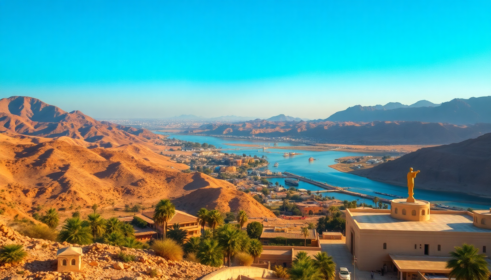

Getting Around Egypt: Flights, Trains & Nile Cruises

I landed in Cairo with a rough plan: hit the Pyramids, then work my way south to Luxor and Aswan. What I didn’t know was how much the journey itself would shape the trip. Between packed overnight trains, cramped domestic planes, and a floating hotel down the Nile, every leg had its own rhythm. Here’s what actually worked—and what didn’t.
Should you fly between Cairo, Luxor, and Aswan?
Domestic flights are the fastest option, but they come with quirks. I booked EgyptAir from Cairo to Luxor—a one-hour hop that saved me a full day of driving. The plane was a basic A320, and the terminal at Cairo Airport’s Terminal 1 felt chaotic, but the flight itself was smooth. From Luxor to Aswan, I flew again; that leg was only 45 minutes. If you’re short on time, flying is your best bet.
- Cairo to Luxor: EgyptAir runs multiple daily flights. Book direct on their site—third-party sites sometimes overcharge.
- Luxor to Aswan: Same airline, short hop. The airport in Aswan is tiny, so don’t expect lounges or decent coffee.
- Baggage limits: 23kg checked included, but carry-on allowances are strict. They weighed my backpack at the gate.
- Cost: Around $80–$120 per leg if booked a week ahead. Last-minute prices jump to $200+.
A word of warning: delays happen. My Cairo-Luxor flight left 40 minutes late with no explanation. Pack snacks and a book.
Is the overnight sleeper train from Cairo to Luxor worth it?
Yes—if you treat it as an experience, not a luxury ride. I took the Watania Sleeping Train from Cairo’s Ramses Station to Luxor. The cabin was compact: two bunks, a fold-down table, and a sink. Dinner and breakfast were included, but “dinner” was a lukewarm tray of chicken and rice. The real value is saving a night’s hotel cost and waking up in Luxor.
- Booking: Reserve through the Watania website or a local travel agent. I used Go Egypt Travel—they charged a small fee but handled the ticket.
- Cabin type: Solo travelers get a single compartment. Couples share a double. Both have a tiny toilet and shower combo.
- Timing: Departs Cairo around 8 PM, arrives Luxor around 7 AM. The ride is bumpy—bring earplugs.
- Cost: About $80 per person for a double cabin. Single occupancy runs closer to $120.
I wouldn’t take it from Luxor to Aswan—that’s only a 3-hour drive or a quick flight. The train is best for the long Cairo-Luxor stretch.
How do you book a Nile cruise between Luxor and Aswan?
The Nile cruise is the backbone of any Egypt itinerary. I booked a 4-day, 3-night cruise from Luxor to Aswan through Memphis Tours—a local operator I found through TripAdvisor. The boat, MS Farah, was older but clean. Cabins had AC and a small window facing the river. The real draw is the itinerary: you stop at Edfu Temple and Kom Ombo Temple along the way.
- Route options: Most cruises run Luxor to Aswan (north to south) or reverse. Book the one that matches your flight plans.
- Inclusions: All meals, guided tours to temples, and onboard entertainment (think belly dancing and galabeya parties). Drinks are extra.
- Cabin choice: A standard cabin is fine. Suites have a sitting area but cost double.
- Cost: I paid $350 per person for a standard cabin, including transfers. Budget cruises start around $250; luxury lines like Sonesta St. George hit $600+.
The cruise isn’t luxury—it’s a floating tour bus. But waking up to the Nile at sunrise, passing palm-lined banks, made up for the dated decor.
What’s the best way to get from Luxor to Aswan by road?
If you skip the cruise, a private car is the most flexible option. I hired a driver through my hotel in Luxor for about $80. The drive took 3.5 hours on a decent two-lane highway. We stopped at Edfu Temple (the best-preserved Ptolemaic temple in Egypt) and Kom Ombo (the dual crocodile-and-Horus temple) for an hour each. Total cost with entry tickets: around $120.
- Private car: Arrange through your hotel or a site like GetYourGuide. Expect a sedan with AC.
- Shared minibus: Cheaper ($10–$15 per person) but cramped and with no stops. You’ll ride with locals and their luggage.
- Train: The daytime Talgo train from Luxor to Aswan takes 3 hours and costs about $15 first class. I didn’t try it—reviews say it’s clean but seats are stiff.
For solo travelers, the shared minibus is fine. For couples or families, the private car lets you control the pace.
Can you use Uber or taxis in Cairo, Luxor, and Aswan?
Uber works well in Cairo and parts of Luxor. I used it to get from Giza Plateau to Khan El Khalili market—about $5 for a 30-minute ride. In Aswan, Uber doesn’t operate. There, I relied on taxis negotiated on the spot. A ride from Aswan Airport to the Old Cataract Hotel area cost $10 after haggling from the initial $20.
- Cairo: Uber and Careem are cheap and reliable. Avoid street taxis—they’ll quote tourist prices.
- Luxor: Uber works in the city center but not near the Valley of the Kings. Taxis from the temple area cost $5–$10.
- Aswan: No Uber. Use hotel-arranged drivers or haggle with taxi stands near the train station.
- Price tip: Always confirm the fare before getting in. I paid $3 for a 10-minute ride in Luxor after agreeing upfront.
One scam to watch: drivers in Aswan often offer a “tour” for $20, then demand $50 at the end. Settle the total before the engine starts.
What about getting around within each city?
In Cairo, the Cairo Metro is a lifesaver. Line 1 runs from Helwan to El Marg, passing near Tahrir Square and the Egyptian Museum. A single ride costs about 5 EGP ($0.10). It’s crowded but safe—women have dedicated cars at the front. I used it to avoid traffic jams that can turn a 15-minute drive into an hour.
- Cairo Metro: Two lines, clean stations, and signs in English. Buy a rechargeable card at any station.
- Luxor: The city is walkable around the Luxor Temple and Corniche. For the West Bank (Valley of the Kings), take a ferry from the east bank ($1) then a taxi ($5).
- Aswan: The Corniche is a pleasant walk along the Nile. For Philae Temple, hire a motorboat from the marina—$15 for a round trip with a 30-minute wait.
A tuk-tuk is common in Luxor and Aswan. I took one in Luxor for $2 to get from the train station to my hotel. They’re fun but bumpy.
FAQ
Is it safe to travel between Cairo and Luxor by train? Yes, it’s safe. The Watania sleeper train has private cabins with locks, and the staff are attentive. I never felt uneasy. The daytime trains are also safe, but keep your bag close—petty theft happens in crowded carriages. Avoid any train after dark that isn’t a sleeper.
Do I need a visa for domestic flights within Egypt? No. Domestic flights only require your passport. You’ll need a tourist visa to enter Egypt (available on arrival at Cairo Airport for $25), but you won’t show it for internal flights. Just your boarding pass and ID.
Can I book a Nile cruise on the spot in Luxor or Aswan? Yes, but I wouldn’t. I saw last-minute deals in Luxor’s train station area for $150 per person—these were boats with broken AC and shared bathrooms. Book at least two weeks ahead through a reputable operator like Memphis Tours or Sonesta to avoid a floating nightmare.
Conclusion
- Fly between Cairo and Luxor if you’re short on time—EgyptAir is reliable but expect delays.
- Take the sleeper train from Cairo to Luxor for the experience and to save a hotel night; skip it for the Luxor-Aswan leg.
- Book a Nile cruise early (Luxor to Aswan) for the best value; standard cabins are fine.
- Use Uber in Cairo and Luxor; haggle hard with taxis in Aswan.
- Walk or take the metro within Cairo; use tuk-tuks and ferries in Luxor and Aswan for short hops.